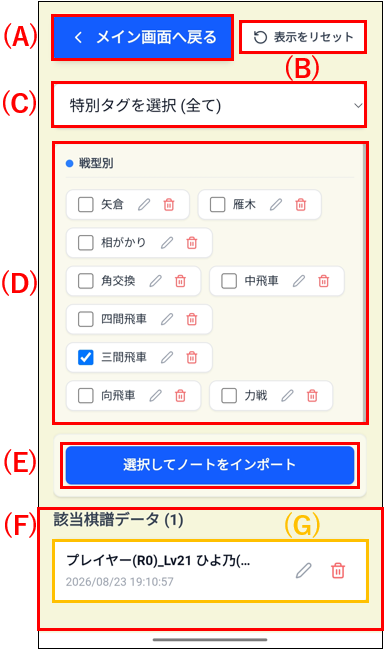
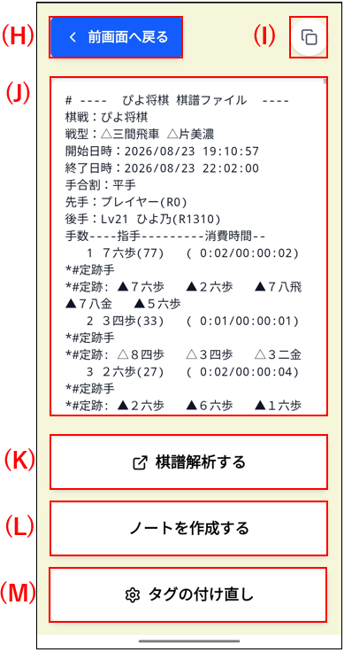
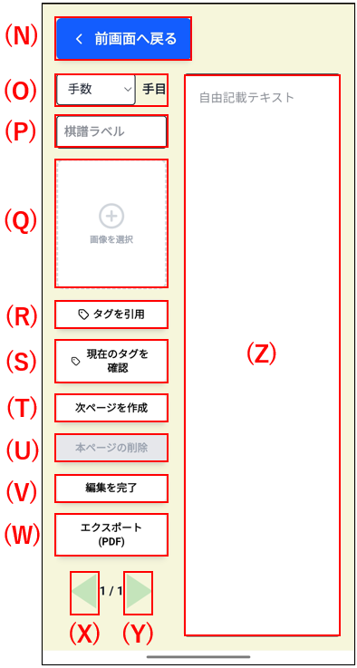
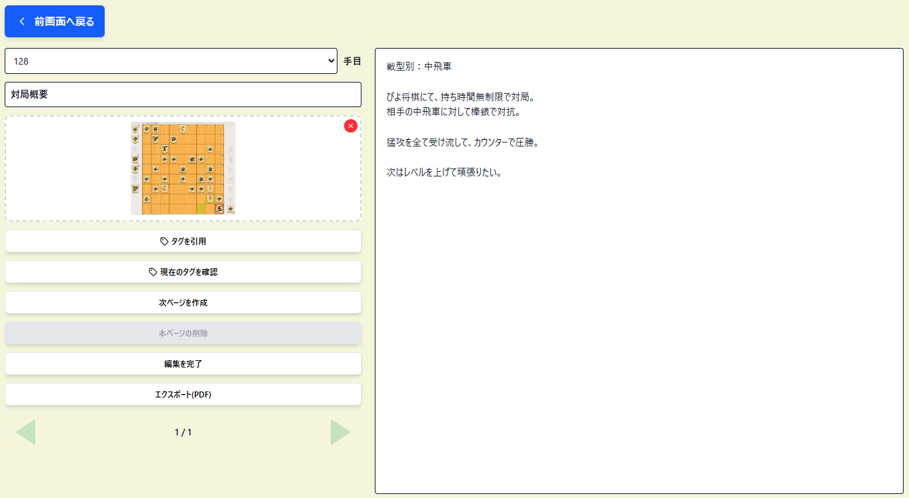
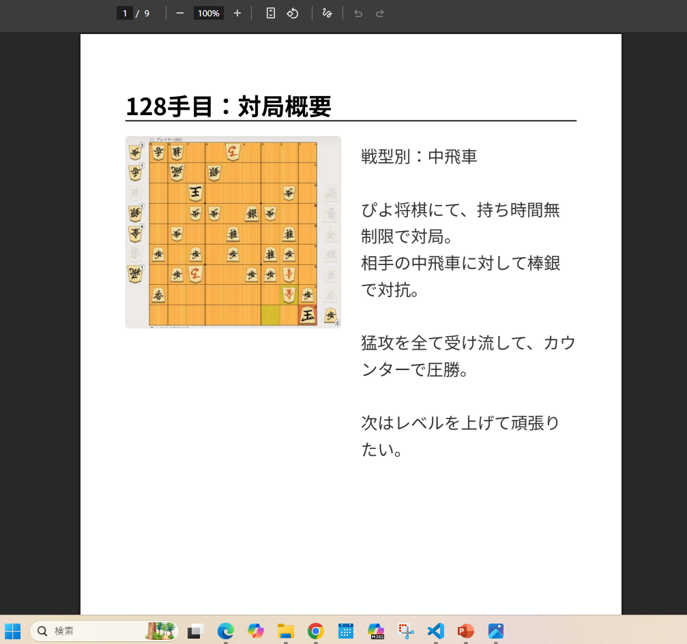
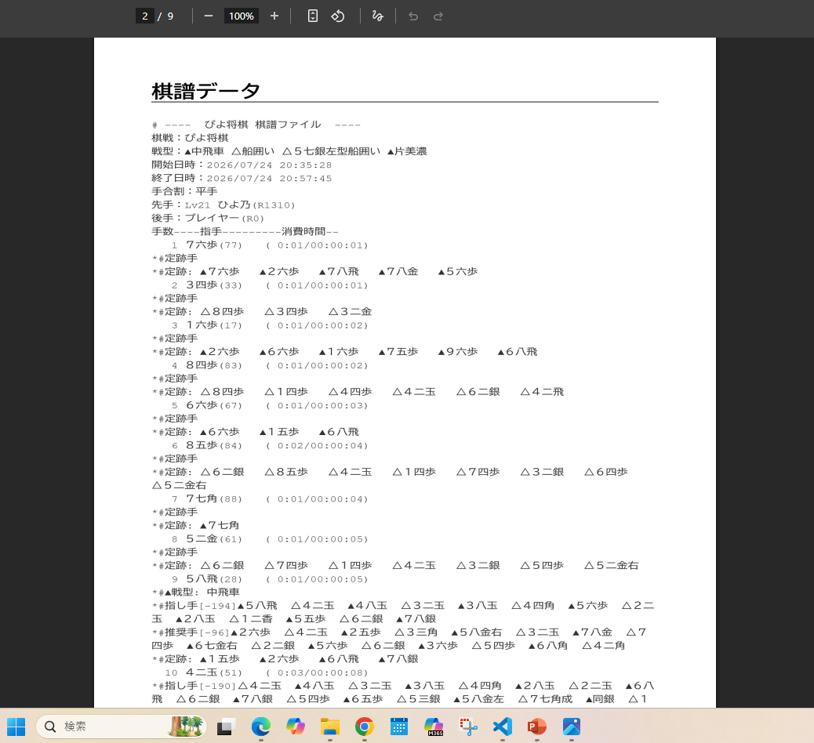

・特定のテーマで今までの振り返り内容を復習したい
同じタグを付与した対局データを一覧表示する機能です。ご自身の思う特定のテーマを共通項として、複数の過去の対局を振り返ることができます。
また選んだ対局データについて、lishogiさんのページに行って棋譜再生と最善手の検討もできます。
細かい局面の振返りについては、振返りノートに書き残しておいて、PDFファイルとしてダウンロードすることもできます。
トップ画面から「過去データ振返り」ボタンを押すと、下記のような画面に遷移します。
(A)ボタンを押すと、トップ画面に戻ります。
(B)ボタンを押すと、表示をリセットします。

(C)で「勝利した対局」または「敗北した対局」と、(D)欄の各タグにチェックをつけて、振り返りたいテーマを選びましょう。選んだタグの全てが付けられた対局が(F)の一覧に表示されます。
(E)は後述するノートをまとめてPDFファイルとしてダウンロードする機能です。
(G)の対局データのタイトルを選択すると、下記のような棋譜データ照会画面に遷移します。

・棋譜再生したい場合
(H)ボタンで前画面に戻ります。
(I)ボタンで登録している棋譜をコピーします。
(J)欄は登録している棋譜データの表示欄です。
(I)ボタンを押した後に、(K)ボタンを押すと、Lishogiさんの棋譜データを入力する画面に行きます。そこで、棋譜データをコピペして、「棋譜をインポート」ボタンを押すと棋譜が再生されます。AIによる最善手を教えてくれる機能もあります。
(L)ボタンは、振返りノートを作成するボタンです。詳細は後述します。
(M)ボタンは、タグの付け直しができるボタンです。
詳しくは、「トップ画面説明」の「棋譜解析したい時」をご覧ください
・振り返りノートを作成したい場合
(L)ボタンを押すと、振り返りノート作成画面へ遷移します。
これによって、対局で学んだことを、局面画像付きで振り返った内容を書き残すことが可能です。

(N)ボタンで前画面に戻ります。保存はしません
(O)で何手目の局面なのかをプルダウンで選びます。
(P)にページタイトルを入力します。(O)を選択した場合は自動記入されます
(Q)には局面画像を貼り付けることができます。
(R)は現在作成しているタグを選んでノートの先頭に記載できます
(S)は棋譜データに紐づいているタグを一覧で確認することができます。
(T)は次のページを作成する機能です。全ページの保存も行います。
(U)は本ページを削除する機能です。
(V)は編集を完了する機能です。
(W)は振り返りノートをPDFでダウンロードする機能です。ちなみに、複数の対局の振り返りノートをまとめてダウンロードする場合は、説明が前後して恐縮ですが(F)ボタンを利用してください。
(X)は前のページに戻る操作です。
(Y)は次のページに進む操作です。
(Z)はノートを記入する欄です。
振り返りノート作成デモ(PCで操作)
サンプルとして、下記のような振り返りノートを作成したとします。

(W)ボタンでPDFとしてエクスポートすると、下記のようになります。

振り返りノートに記載した内容の後に、自動で登録している棋譜データも追加されるようになっております。
